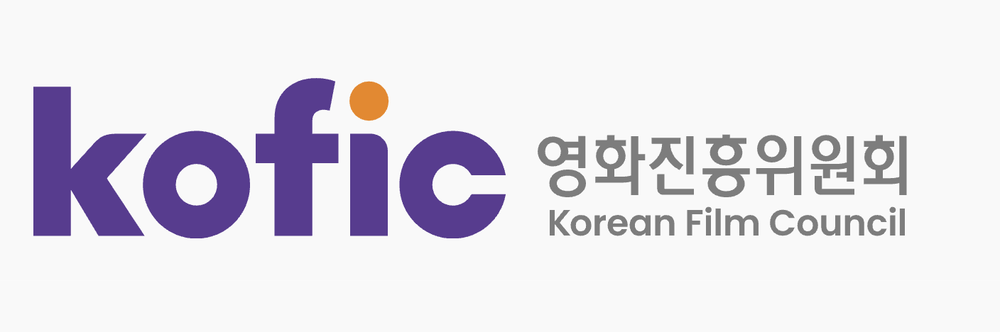
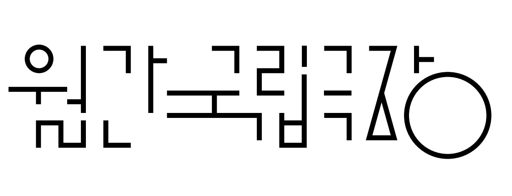

영국 공연예술의 심장 — 내셔널시어터 〈인터 알리아〉
At the Heart of British Performing Arts — National Theatre's Inter Alia


Journalism — Riyadh & London
Reporting on Korean culture, events, and issues in Saudi Arabia for the Korea Foundation for International Cultural Exchange (KOFICE, 한국국제문화교류진흥원); covering the Saudi film industry for the Korean Film Council (KOFIC, 영화진흥위원회). Also contributing theatre journalism from the United Kingdom for Monthly National Theatre of Korea (월간국립극장).